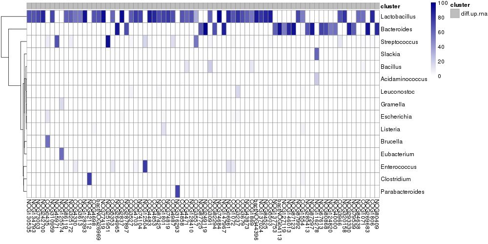

Assigning NOGs to genera¶
We were interested in defining which genera were responsible for the expression of differentially abundant NOGs. Since we have read assignments to genera and NOGs, all we had to do was to select reads that were aligned to both and count the number of reads per genus-NOG pair. For each sample we take the RNA-seq read assignments and do the counting. By default the following script will output the percentage of reads from each genus that map to a NOG. This is the basic input for the generation of Fig. 5b and c. The script takes as input a gene2cog mapping file (-m), the list of NOGs which we wish to calculate % genus reads over (-d), the level at which to count (–level), the taxa assignments file and the alignment to the IGC:
$ python <path_to_proj029>/proj029/scripts/nogs2genera.py
-m gene2cog.tsv.gz
-d common_genes.tsv
--level=genus
--alignment-taxa=stool-HhaIL10R-R1.lca
--alignment-genes=stool-HhaIL10R-R1.igc.tsv.gz
--log=stool-HhaIL10R-R1.diamond.ptaxa.tsv.gz.log
| gzip > associate_taxa.dir/stool-HhaIL10R-R1.diamond.ptaxa.tsv.gz
Once we have a .ptaxa.tsv.gz file for each sample, we combine the tables using combine_tables.py. This proces is somewhat time-consuming and uses a lot of memory. We have therefore provided the .ptaxa.tsv.gz combined files in the data/RNA/directory. The file is called associated_ptaxa.tsv.gz. You can link this file to your RNA/ working directory:
$ cd <path_to_RNA>/RNA
$ ln -s <path_to_data>/data/RNA/associated_ptaxa.tsv.gz .
It will look like this (truncated for visual purposes):
cog taxa stool-HhaIL10R-R2_preads stool-aIL10R-R3_preads stool-aIL10R-R2_preads stool-WT-R4_preads stool-WT-R1_preads NOG243842 unassigned 100.000000 100.000000 0 0 0 NOG243840 unassigned 50.000000 0 50.000000 100.000000 100.000000 NOG243840 Clostridium 50.000000 0 0 0 0 NOG281778 unassigned 100.000000 0.000000 0.000000 50.000000 66.666667 NOG41625 unassigned 33.510638 46.000000 40.909091 48.762376 48.958333 NOG41625 Parabacteroides 2.393617 1.000000 0 1.485149 3.125000 NOG41625 Bacteroides 48.670213 29.000000 31.818182 22.772277 23.958333 NOG41625 Porphyromonas 11.436170 19.000000 18.181818 19.554455 9.375000 NOG41625 Flavobacterium 0.265957 0 1.515152 0.247525 2.083333
Where a read has a NOG assignment but not a genus assignment it contributes to the percentage of reads annotated as unassigned.
Build the NOG genus counts matrix¶
We needed to transform this data into average percentages across samples for each NOG-genus combination. To do this we use the following function. In the RNA/ directory:
>> import Proj029Pipelines.PipelineMetaomics as PipelineMetaomics
>> PipelineMetaomics.buildGenusCogCountsMatrix("associated_ptaxa.tsv.gz", "associated_ptaxa_average.matrix")
This will give us this file:
COG0001 COG0002 COG0003 COG0004 COG0005 COG0006 COG0007 COG0008 COG0009 Abiotrophia 0 0 0 0 0 0 0 0 0 Acaryochloris 0.002159625 0 0 0.0186110625 0 0.009047375 0 0 0.0021784375 Acetivibrio 0 0 0 0 0 0 0 0 0 Acetobacter 0 0.003267125 0 0 0 0.0112120625 0 0.0004040625 0.011865875000000001 Acetobacterium 0 0 0 0 0 0 0 0 0 Acholeplasma 0 0 0 0 0 0 0 0.0198231875 0.003799375 Achromobacter 0 0 0 0 0 0 0 0 0 Acidaminococcus 0 0.17178093749999998 0 0 0 0.056347 0.2652984375 0.005379875 0.10410106250000001 Acidianus 0 0 0 0 0 0 0 0 0
We can use this data and our previously described NOG annotations to assess the maximum percentage that any genus contributes to the expression of a NOG
Plotting the maximum contribution of a genus to NOG expression¶
We can recreate Fig. 5b by running:
>> PipelineMetaomics.plotMaxTaxaContribution("associated_ptaxa_average.matrix",
"<path_to_compare_datasets>/compare_datasets/rna_dna_ratio.annotated.outsidepi.tsv",
"associated_ptaxa_max_contribution.png")
{kind=link}
The cumulative proportion plot shows us that the NOGs annotated as being up-regulated and colitis-responsive are more likely to be expressed by a dominant genus than the other NOG sets.
Plotting dominant genera for colitis-responsive NOGs¶
To see which genera are dominating the expression of these NOGs we use the following function:
>> PipelineMetaomics.heatmapTaxaCogProportionMatrix("associated_ptaxa_average.matrix",
"<path_to_compare_datasets>/compare_datasets/rna_dna_ratio.annotated.outsidepi.tsv",
"associated_ptaxa_heatmap.pdf")
This will produce the plot below, representing genera that contribute >=10% to NOG expression of up-regulated, colitis- responsive NOGs that have a dominant genus (>=50% maximum genus contribution).
{kind=link}